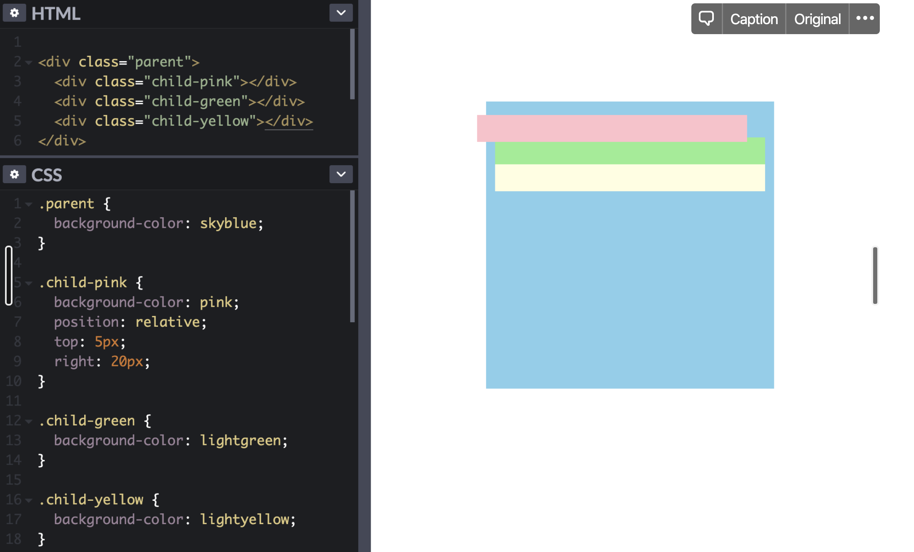
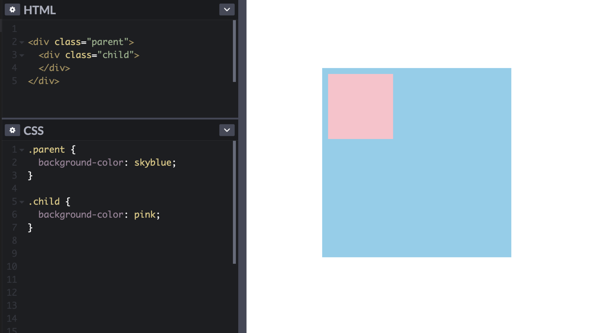
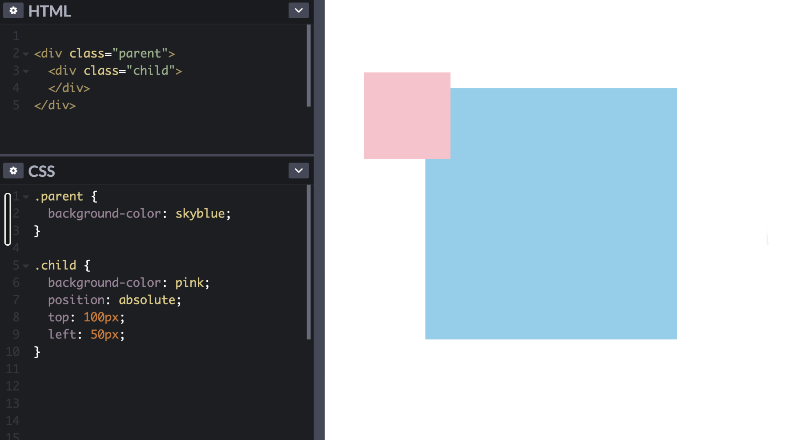
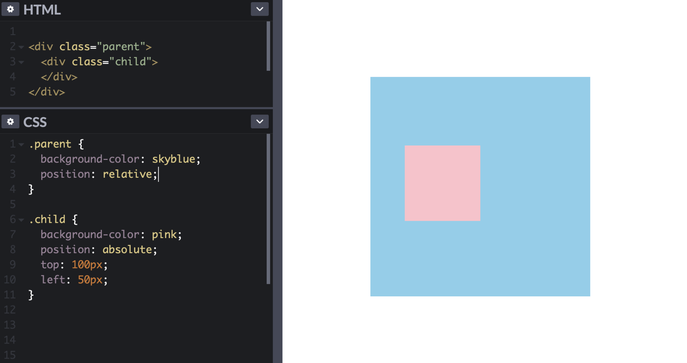
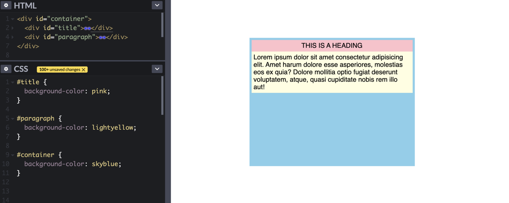

one of the most important uses of CSS is to position html elemtents on the page. we will be covering 4 of the most common types of css positioning
position: static
The default. this makes the element move with the elements surrounding it just as normal. you would
position: relative
relative positioning is a way to offset an element, relative to where it originally was. consider the following example:

The divs load almost completely normally, however, the pink div is moved 5px down and 20px to the left. none of the other elements are affected by this change either, even though the move caused some of them to overlap. It's as if, when loading a page with a relative position element, all of the elements get in their places, ready for the page to be displayed, but at the last minute, the CSS decides that one element should be moved. none of the other elements even get a chance to react, and the space that our relative element used to be in is left empty, as if someone is savings it's spot in line.
relative positioning is not used very often, apart from one particular use case. which will be explained below:
position: absolute
positions the element relative to the next parent element that has a position (apart from static, as this is the default). if none of the parent elements have a position of fixed, relative, absolute, or sticky, the the element will position itself relative to the entire page.
This is very powerful because it allows you to forcefully place anything on the page in a specific location, or within a parent element, as if it were a sticker that you could stick on top of everything else.
elements positioned with absolute will be removed from the document flow, meaning as far as the other elements are concerned, our absolute element doesn't exist.
note that elements positioned with absolute scroll just like the rest of the page.
position: relative (continued)
now that we understand absolute positioning, we can go through one very popular use of relative positioning. using the following example:

say we want to position the pink square 100px from the top, and 50px from the left of the blue square. we might try to use absolute positioning. but if we tried to do that, we would find that the pink square is not using the blue square as a basis for the positioning, but is instead positioning itself relative to the page.

this is because none of the parent elements of the pink square have non-static positioning, so by default, it is using the page itself as the basis for it's position: 100px from the top and 50px from the left.
we can fix this by making the blue square - the pink square's parent element - position: relative.
"but won't this change the position of the blue square??"
no, and this is why relative positioning is so useful. if we use position: relative, but simply don't give it any extra rules, it will position itself exactly in it's original position, without moving.

by telling the blue square to position itself relative to it's original position, but nothing more, we make no change to the position of the blue square. However, the pink square now recognizes the blue square as a non-static parent element and positions itself relative to the blue square. Problem solved!
position: fixed
the fixed position is very similar to absolute, in that it allows you to forcefully position an element anywhere on the page, outside of the document flow. However, there is a key difference, fixed elements align themselves according to the view window, meaning even as the page scrolls, they stay in the same place. for this reason, fixed positioning is often used to create navigation bars that stay at the top of the screen as you scroll.
think of fixed positioning as sticking an element physically to your computer screen. it it completely removed from the rest of the page and both it and the rest of the page act like the other doesn't exist.
in the following example, the pink heading div is positioned inside of the blue containing div, when we scroll, everything is fixed on the page and moves up up we scroll down.

however, we can stick this div in place if we wanted by switching it's positioning to fixed
note that this freezes the div in place but also changes it's width and causes it to overlap the paragraph text. This is because using fixed positioning takes the element out of the document flow, stopping all interaction between it and the other elements. when this happens, the paragraph div snaps up to take it's place, and it shrinks to a width of auto because it's no longer automatically filling the width of the blue div.
we can also take this one step further and create a top navigation bar by positioning it 0px from the top and left, and changing it's width to 100%.